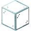
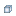
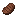
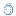

Contents
- The World
- Getting Started
- Advanced Mechanics
- Advanced Materials
- Animal Husbandry
- Anvils
- Aqueducts
- Armor
- Barrels
- Bellows
- Blast Furnace
- Bloomery
- Bowls
- Dairy Products
- Dairy Products
- Charcoal Forge
- Charcoal Pit
- Chisel
- Composter
- Crankshafts
- Crops
- Crucible
- Dairy Products
- Dairy Products
- Damage Types
- Preservation
- Dye
- Fertilizers
- Fire Clay
- Fishing
- Flux
- Gems
- Glassworking
- Glass Products
- Firepit And Grill
- Heating
- Keeping Hydrated
- Jarring
- Lamps
- Leather Making
- Light Sources
- Mechanical Power
- Minecarts
- Panning
- Papermaking
- Pets
- Firepit And Pot
- Powderkegs
- Prospecting
- Pumps
- Quern
- Salads
- Sandwiches
- Scribing Table
- Sluices
- Steel
- Support Beams & Collapses
- Weaving
- Wooden Buckets
- (Addon) Firmalife
- (Addon) Firma: Civilization
1.20.1 / Advanced Mechanics / Glass Products

Glass Products

Glass Products
The most simple glass products are Glass Panes and Glass Blocks. In order to craft them, you must start with a Blowpipe with a Glass Batch, and then perform a Pour.
- Table Pours are used to create Glass Panes
- Basin Pours are used to create Glass Blocks
Glass can also be dyed before it is poured to create colored glass. The color is dependent on the type of glass batch, and any powders that have been added.
Each type of Glass Batch has a different natural color of glass that they will create. Silica glass batches can be made into many colors, Olivine, and Volcanic glass can be made into relatively few colors.
Table Pour
Glass Panes are made with a Table Pour. A pouring table is made by placing up to sixteen Brass Plated Blocks in a continuous area.
1. Add a Glass Batch to a Blowpipe.
2. Heat the blowpipe to Faint Red.
3. Right Click the Blowpipe on the top of the table.
4. Finally Right Click with a Paddle to flatten the glass.


Once the glass is cooled, it can be broken with a Gem Saw to obtain.
Basin Pour
Glass Blocks are made with a Basin Pour. A basin is made by surrounding all sides of an air block except the top with Brass Plated Blocks.
1. Add a Glass Batch to a Blowpipe.
2. Heat the blowpipe to Faint Red.
3. Right Click the Blowpipe on the top of the table.


Once the glass is cooled, it can be broken with a Gem Saw to obtain.
Coloring Glass
Glass has a natural color based on the type of Glass Batch that was used. Other colors can be made using a Bowl.
To use, place the Bowl on the ground, then Right Click the required Powder. Before Pouring, use the Blowpipe on the bowl to add the powder to the batch.
The next pages show the different combinations of glass types and powder materials to create each color.
Dye Colors
- White: Silica or Hematitic Glass + Soda Ash
- Black: Any Glass + Graphite
- Gray: Any + Graphite + Soda Ash
- Light Gray: Any + Graphite + 2x Soda Ash
- Purple: Any + Iron + Copper
- Brown: Any + Nickel
- Cyan: Non-Volcanic Glass + Copper + Sapphire
- Green: Silica or Hematitic Glass + Iron
- Lime: Silica or Hematitic Glass + Iron + Soda Ash
- Light Blue: Silica Glass + Lapis Lazuli
- Blue: Silica Glass + Copper
- Red: Silica or Hematitic Glass + Tin
- Yellow: Silica or Hematitic Glass + Silver
- Orange: Silica Glass + Pyrite
- Magenta: Silica or Hematitic Glass + Ruby
- Pink: Silica Glass + Gold
- Tinted: Non-Silica Glass + Amethyst


Steps
Blow
-

Pinch
-

Flatten
Blow
-

Saw
Lamp Glass is a necessary component to craft Lamps.


Steps
Blow
-
Pinch
-
Roll
-
Saw
Jars are also made from blown glass, but only silica or hematitic glass.


Steps
Blow
-
Pinch
-
Saw
Glass Bottles can also be made. The quality of the glass bottle depends on the type of glass used to make it.

Steps
Blow
Stretch
-
Roll
-
Saw
The Lens is used for crafting the spyglass, compasses, and daylight sensors.